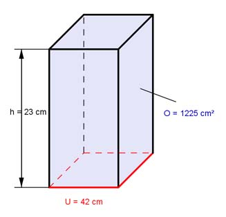

Aufgabe 6 Ein Prisma hat eine Oberfläche O von 1225 cm², eine Höhe h von 23 cm und einen Umfang U der Grundfläche von 42 cm. Wie groß sind die Grundläche G und die Mantelfläche M?  a) M = U * h M = 42 cm * 23 cm = 966 cm² b) O = M + 2 * G |-M O - M = 2 * G |:2 O - M G = ------- 2 1225 cm² - 966 cm² G = -------------------- = 129,5 cm² 2